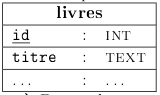

C9 Schéma relationnel d'une base de données
Activités
 Activité 1 : Rappels de SQL
Activité 1 : Rappels de SQL
- Commencer par télécharger et sauvegarder la base de données de livres suivante : Livres Cette base provient de pixees
-
Quelques rappels sur les bases de données
- Lancer SQLite et ouvrir la base de données
livres.db(qui contient une unique table livres). Rappeler la signification du vocabulaire suivant : enregistrement, attribut. Que sont les enregistrements dans le cas de cette table ? - De quel type est l'attribut
note? Proposer un domaine pour cet attribut. - Rappeler le principe d'unicité, quel attribut sert de clé primaire ?
- Lancer SQLite et ouvrir la base de données
-
Quelques rappels sur le sql
- Ecrire une requête permettant de lister tous les livres ayant obtenu une note de 10.
- Ecrire une requête permettant de lister les livres dans l'ordre alphabétique de leur titre.
- Ecrire une requête permettant de savoir combien d'auteurs différents apparaissent dans cette base de données.
- Ecrire une requete permettant de calculer la moyenne des notes attribuées aux livres écrits par René Barjavel.
-
Du nouveau en sql
Nous n'avons pour le moment vu que l'instruction select qui permet de sélectionner des données, le langage sqlpermet aussi :
- d'ajouter des données dans une table avec insert,
- de modifier des données dans une table avec update,
-
de supprimer des données dans une table avec delete.
-
Faire vous même des recherches sur le web pour comprendre la syntaxe d'une requête d'insertion, puis ajouter dans cette table l'enregistrement correspondant au livre "la planète des singes" écrit par Pierre Boulle (né en 1912) en francais et publié en 1963. On laisse pour le moment vide le champ
noteet on attribue à cet enregistrement l'id17.Aide
Respecter bien le type des attributs et ne pas oublier pas l'attribut
id -
Rechercher aussi la syntaxe d'un sql puis modifier l'enregistrement précédent en mettant une note de 10.
Aide
Utiliser l'attribut
idpour repérer l'enregistrement à modifier -
Rechercher enfin la syntaxe d'un delete, le tester en ajoutant puis supprimant un enregistrement de votre choix.
-
-
Vers l'utilisation de plusieurs tables On appelle schéma relationnel l'ensemble des relations (ou tables) présentes dans une base de données. On représente généralement une table d'un schéma relationnel en indiquant chaque attribut, la clé primaire étant souligné. Le schéma de notre base est donc :
livres (id, titre, nom_auteur, prenom_auteur, annee_auteur, langue_auteur, annee_publi, note) Des représentation en tableau sont parfois plus lisibles : - De nombreuses informations sont dupliquées dans notre base de données, lesquelles ?
- Quels sont les inconvénients de cette duplication d'information ?
- On propose de créer une nouvelle table auteurs qui contiendra les informations sur les auteurs, proposer un schéma pour cette table.
- La table des livres s'en trouve allégée, on y enlève les informations concernant l'auteur et on ajoute un champ
id_auteurqui référence un élément de la table des auteurs. On dit queid_auteurest une clef étrangère, c'est à dire la clé primaire d'une autre table, dans le schéma relationnel on note ce champ en le faisant précédé d'un#. Ecrire le schéma relationnel de cette nouvelle base de données.
Activité 2 : Plusieurs tables
On reprend la base de données livres contenant maintenant deux tables et construite à l'activité précédente :
Livres avec table auteur
Le schéma relationnel de cette base de données est donné ci-dessous :

-
Intégrité référentielle
- Rappeler rapidement la signification des attributs soulignés et du caractère
#. - On considère la requête suivante :
quel devrait être l'effet de cette requête sur la base de données ? Tester cette requête, que se passe-t-il ?
DELETE FROM auteurs WHERE id_auteur=10 - Même question pour la requête :
INSERT INTO livres VALUES (17,11,"Harry potter",1997,6) - Ces requêtes échouent car le sgbd préserve de façon automatique l'intégrité référentielle schématisé par la flèche dans le schéma relationnel ci-dessus. En faisant éventuellement des recherches sur le web, donner une définition de l'intégrité référentielle.
- Rappeler rapidement la signification des attributs soulignés et du caractère
-
Requête dans plusieurs tables On désire maintenant lister tous les titres de livres présents dans notre base de données accompagnés du nom de leur auteur. On doit donc effectuer une requête sur plusieurs tables puisque les titres sont dans la table des livres et les noms d'auteurs dans la table auteurs
Danger
Les attributs de deux tables peuvent avoir le même nom, par exemple ici
id_auteurest un attribut de livres et aussi de auteurs. On prendra donc l'habitude pour éviter toute ambiguïté de préfixé l'attribut par le nom de sa table. Ici, on a donc les attributeslivres.id_auteuretauteur.id_auteur.-
Tester la requête suivante, dans laquelle on a préfixé les attributs par le nom des tables :
Le résultat est-il celui attendu ?SELECT livres.titre, auteurs.nom FROM livres,auteurs -
On doit effectuer ce qu'on appelle une jointure c'est à dire indiquer qu'on associe le livre et l'auteur lorsque le champ
id_auteurdes deux tables correspond. La syntaxe est la suivante :Tester cette requête.SELECT livres.titre, auteurs.nom FROM livres JOIN auteurs ON livres.id_auteur = auteurs.id_auteur -
Ecrire une requête permettant de lister tous les titres de livres avec nom et prénom de l'auteur lorsque les auteurs sont nés en 1920.
-
-
A vous de jouer !
Télécharger la base de donnéesbibliotheque: Bibliotheque on y trouve les deux tables des questions précédentes et deux nouvelles tables : clients et emprunts.-
Donner le schéma relationnel de cette base de données en y faisant figurer les clés primaires et étrangères.
Aide
Faire le schéma sous la forme d'un schéma comme au début de cette activité en y ajoutant les deux tables clients et emprunts.
-
Expliquer rapidement les relations préservées par l'intégrité référentielle de cette base de données en donnant un exemple de requête qui renverrait une erreur de type
foreign key constraint failed. -
Ajouter un enregistrement de votre choix dans la table clients.
-
Ajouter un enregistrement pour le client de la question précédente dans la table des emprunts.
-
Ecrire une requête permettant de lister tous les emprunts en cours dans cette bibliothèque avec le nom de l'emprunteur et le titre du livre.
-
Activité 3 : Une enquête policière avec SQL
Le but de cette activité, proposé sur le site de l'université américaine Northwerstern University est de résoudre un crime en utilisant des requêtes SQL dans une base de données dont voici le schéma relationnel :

Toutes les requêtes peuvent être exécutées directement sur le site, cependant vous pouvez télécharger ci-dessous la base afin d'exécuter vos requêtes en local : SQL Murder Mystery
Cliquer sur l'image ci-dessous pour accéder à l'enquête et trouver le coupable.

Cours
Vous pouvez télécharger une copie au format pdf du diaporama de synthèse de cours présenté en classe :
Attention
Ce diaporama ne vous donne que quelques points de repères lors de vos révisions. Il devrait être complété par la relecture attentive de vos propres notes de cours et par une révision approfondie des exercices.
Exercices
Exercice 1 : Exercices en ligne de SQL
Des exercices en lignes de requêtes sur plusieurs tables crées par N. Reveret. Ces exercices peuvent être faits à la maison (aucune installation nécessaire) et les réponses sont fournies.
Exercice 2 : Exercices du CNAM
Le site du CNAM propose de vous entraîner aux requêtes SQL sur quatre base de données (films, voyageurs, immeubles et messagerie). Pour chaque base, des requêtes sont suggérés et la correction est proposée.
Exercice 3 : Exercices de Baccalauréat session 2021
-
Amérique du nord (Jour 1) - Exercice 1
Corrigé disponible
Exercice 4 : Exercices de Baccalauréat session 2022
-
Amérique du sud (Jour 1) - Exercice 1
Corrigé disponible
-
Métropole (Jour 1) - Exercice 2
Corrigé disponible
-
Métropole (Jour 2) - Exercice 4
Corrigé disponible